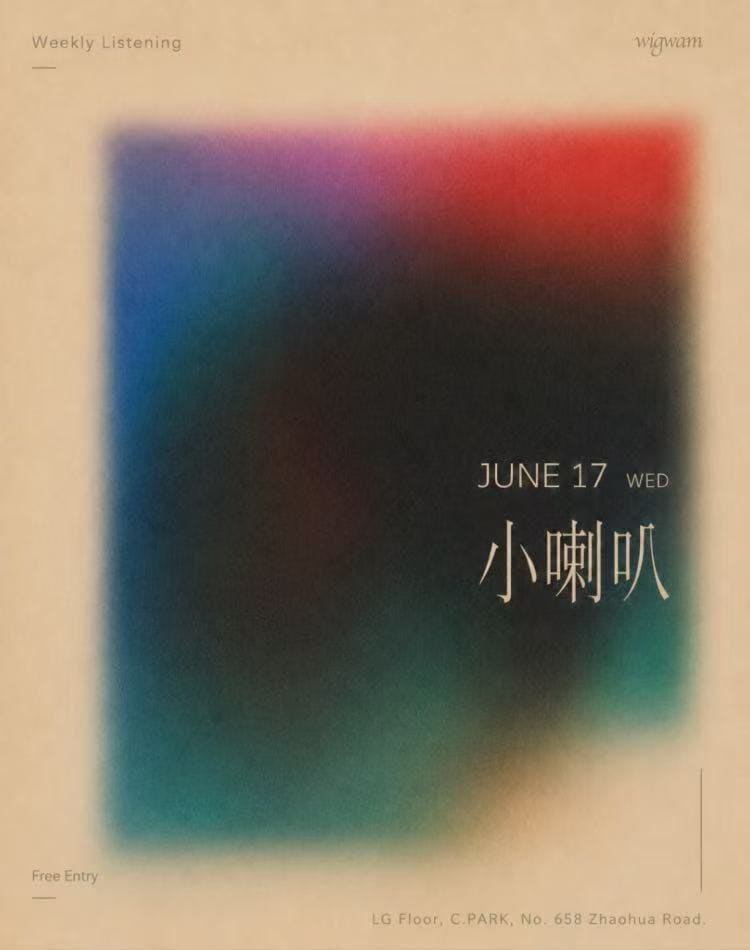

past / Medium
Weekly Listening: Xiaolaba / 小喇叭
Free-entry Wigwam Weekly Listening entry for Xiaolaba / 小喇叭. The source confirms the date, venue, address, and free entry, while the artist lane should stay lightly described until stronger profile sources are available.

DateJun 17
Time22:00-late
VenueWigwam
DistrictChangning
Soundelectronic listening, local DJ context
PriceFree Entry
Age / IDCheck venue
Source layerofficial-social-evidence
Intensitymedium
Credibilityloose
Event Tags
Simple tags for sound, room context, ticket/source status, and details that still need a source check.
How We Recommend This
- RecommendationIncluded as a local Wigwam listening slot with a confirmed free-entry poster and a named DJ; useful for scene-followers tracking low-pressure midweek programming.
- Best forBest for readers who follow local DJ appearances and want a no-ticket midweek Wigwam route.
- Verify before goingCheck Wigwam before going for age policy, room/capacity status, and any late schedule change; no public ticket URL is attached because the event is listed as free entry.
- Source confidenceUser-provided Wigwam poster and weekly schedule screenshots confirm the event-level date, time, venue/address, free-entry status, and named DJ. Age policy and live room capacity remain unchecked.
Lineup and Notes
- XiaolabaWigwam artist-profile screenshot names Xiaolaba / 小喇叭 and the phrase Just Live for You for One Day; it supports the event identity but does not add a detailed public genre biography.
Source Trail
- Weekly Listening Xiaolaba / 小喇叭 poster screenshot official-poster-screenshot / checked 2026-06-15 Confirms the 2026-06-17 Weekly Listening booking, free entry, Wigwam branding, and C.PARK / Zhaohua Road location.
- Wigwam weekly schedule screenshot 2026-06-15 to 2026-06-22 official-wechat-screenshot / checked 2026-06-15 User-provided Wigwam weekly schedule screenshot confirms daily timing blocks, free-entry notes, and listed DJs/events for 2026-06-15 through 2026-06-22.
- Wigwam June 2026 monthly calendar screenshot official-wechat-screenshot / checked 2026-06-15 User-provided Wigwam June calendar screenshot lists the June program and confirms the relevant event dates at Wigwam.
- Xiaolaba / 小喇叭 Wigwam artist profile screenshot artist-profile-screenshot / checked 2026-06-15 Wigwam artist-profile screenshot names Xiaolaba / Xiao Laba and the phrase Just Live for You for One Day; it supports the event identity but does not add a detailed public genre biography.
- SmartShanghai Wigwam venue context venue-context / checked 2026-06-15 SmartShanghai venue context supports Wigwam / C.PARK location and broad deeper-house, techno, dub, ambient, reggae, and live-electronic lane. Venue context only.
Trust Ledger
- Last checked2026-06-15
- Selection basisIncluded for source visibility, room fit, and these editorial signals: low techno fit, listening/live angle, late room.
- Commercial relationshipNo paid placement recorded.
- Correction routeSend source fixes through RED 980793145 or the corrections policy.
- PolicyHow We Recommend / Corrections